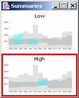
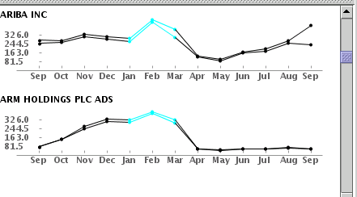
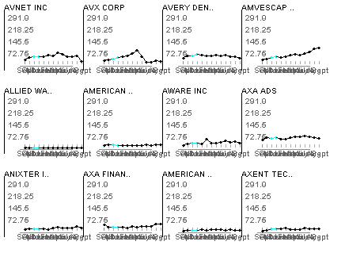

If you want to run TimeSearcher on a Macintosh, please get in touch with me. As of January 2003, the OS X distributions do not include Java 1.4, so the latest version of TimeSearcher will not run. I can provide older versions of TimeSearcher, with limited functionality, upon reques. Unfortunately, the OS X implementation of the Java runtime environment (JRE) lags behind Windows/Unix Java JREs, so performance on Macs will be substantially poorer than on Windows/Unices.
This will cause the creation of a directory labeled "ts". To run TimeSearcher, go into this directory and execute the file named ts.bat (if using windows) or ts.sh (if linux).
If you have your own data file in a comma-delimited text file, spreadsheet file, or similar format, you can follow a few simple steps to format your data for use with TimeSearcher.
Once the data set is loaded, you can immediately begin to look at the individual items by moving the scroll bar on the window on the lower left-hand window, which displays the individual items. You can also browse the data set by scrolling the middle window on the right-hand side. These two windows are synchronized: clicking on an item in one window will lead to updating of the other.
Figure 1: The main TimeSearcher Window, with the data envelope display in the upper window
Queries are created in the upper-left window. Initially, this window contains a "data envelope". This overview display is a contour that includes all of the values between the minimum and maximum values that any item in the data set has at each time point. Thus, the data envelope tells you where data is and isn't, at each time point: at any given time point, there are no items that have values at that time point outside of the range of the envelope. This query space has two modes of operation: when the "hand" icon on the upper-left corner of the toolbar is selected (gray), the system is in the default query modification mode. When the adjacent rectangle is highlighted, you are in query creation mode.
Figure 2: A closeup of the TimeSearcher toolbar. The highlighted rectangular button is used to enter query creation mode.
To switch into query creation mode, press the rectangle button. This enables query creation mode for one timebox, after which the mode will revert to modification mode . If you wish to "lock" the system into creation mode for multiple queries, double click on the rectangle button. If you do this, you will need to manually press on the hand button to revert to query modification mode.
The query will be executed immediately after you release the button, without any further interaction required. When the query is executed, a "query envelope" overview will be drawn. This overview is similar to the graph envelope, but it shows the extreme values for only those items that match the current query.
Multiple query items can be created to form conjunctive queries. In other words, if you have multiple boxes, an item must satisfy the constraints associated with all of the boxes in order to be included in the data set.
Figure 3: Closeup of the query space, showing a query containing two timeboxes and the associated query envelope display
When a query is created, the list of items in the item list and graph display of individual items are updated to include only those items that match the query. In the graph display, the time points corresponding to each query item are highlighted.
Once you have selected the desired box(es), you can click and drag on them to move them. Arrow keys can also be used to move the boxes left,right, up or down.
The resize handles (purple squares) that are found on selected timeboxes can be used to scale the timeboxes - simply grab the handle and pull in the desired direction. This will work for single or multiple timeboxes.
Figure 4: A two-timebox query with both boxes selected for modification
If you've selected only one timebox, you can modify it using the range sliders in the lower right-hand window. These two-sided sliders allow for control of each dimension (height and width) of the timebox separately: the top slider controls the width (time extent), while the bottom controls the height (values). To change the range of values covered in that dimension, click on the end of the slider that you'd like to change and drag it to the desired location. To move the box in a dimension, click on the center of the range slider and drag it to the desired position.
Figure 5: Range sliders for modifying queries. The top slider controls the box's range in time, and the bottom slider controls the range in value.
Figure 6: A timebox popup menu
Figure 7: Query Space with graph envelope display
These lines can be selected: mousing over one of the graph lines leads to display of that item in the lower display window, and item list on th right, and associated details in the detail window in the upper right-hand corner. Similarly, if you click on one of the items in the lower-left display, or in the item list on the right, the appropriate graph overview line will be highlighted.
The graph overview is not turned on by default. To activate it, select "Graph Overview" from the "View" menu. As the graph overview can be computationally intensive, it will not be displayed unless the number of items in the result set is below a given threshold. As long as size of the result set is greater than the threshold, only the query envelope and data envelopes will be displayed. When your query becomes specific enough to make the size of the result set smaller than the threshold, the overview will be displayed. To adjust the threshold, select "Preferences" from the "Edit" menu.
If desired, the data and query envelopes can be turned off by selecting "Data Envelope" from the "View" menu.
Figure 8: Example of a drag and drop query
Figure 9: Toolbar pulldown menu for switching query variables
When this pull-down is used to select a new variable, an additional tabbed pane is added to the query space. The tab controls can be used to move between the different variables. Similarly, variables can be removed by clicking the "x" on the appropriate tab. Once a variable is remvoed, it can be reinstated via the pull-down menu.
Figure 10: Query Space with tabs for two variables
When more than one variable is present, TimeSearcher provides an overview summary window that can be used to view the queries on all variables - not just the one that is currently viewed. This window contains one pane for each currently active variable, with the selected variable highlighted.

Figure 11: Summary window for multiple variable query.
Each variable can be queried individually by placing a query box in the appropriate window. The result set that is displayed contains only those items that match all of the active queries on all of the current variables. However, each window will have its own data and query envelopes and graph overview (if selected), representing the the displayed items and their values for the selected variable. Similarly, when multiple variables are present, the display panel at the bottom of the TimeSearcher window shows the items in the data set, using values for the currently selected variable. However, the time points for queries for all current variables will be highlighted. For an alternative display, the "Display All Variables" checkbox in the "View" menu can be selected. This will cause profiles for all of the current selected variables to be drawn on the query space for each item in the result set.

Figure 12: Display space with multiple variables shown
When the normalization setting is changed, the label in the status bar at the bottom of the query space will be changed to indicate the currently active data treatment - "RAW", "NORMALIZED", or "DEVIATIONS", respectively.
As with changes to the query variables, changes in the normalization treatment cause the query space to be cleared and reset.
Figure 13: The Flip button on the TimeSearcher Toolbar
Figure 14: A two-timebox query, before flipping
Figure 15: The inverted version of the query.
To use this alternative interpretation, create a timebox and then right-click on it to pull up a menu.The "any" checkbox on the popup menu switches from the default conjunctive mode to the anyof interpretation, and the color of the box will change to indicate the change in query semantics.
Figure 16: A timebox query and its anyof equivalent
Figure 17: The toolbar button to be used for creating variable time timeboxes.
Figure 18: A VTT as initially created. Note that the data envelope display has been turned off, for clarity.
Just as with a standard timebox, the vertical extent of the VTT defines a range of values that items must fall within. Unlike a timebox, VTTs have two sets of horizontal extents. The inner extent defines the duration of interest - how long must each item be within the given value ranges? The outer extents define a window during which this interval must be found. For example, in the figure above, items must be in the given value range for a 5 month-period sometime between December and April. Since that range is exactly a 5-month period, this box is equivalent to a standard timebox occupying the same time periods. The outer time extents and value extents of a VTT can be changed by dragging and scaling, just a with any timeobx. However, the handles on the sides of the inner rectangle can be dragged to change the length of the interval of interest.
Figure 19: A VTT with internal constraints modified, via dragging of the handles on the internal rectangle.
For example, this figure of a modified VTT shows the inital VTT with constraints relaxed to include an inner interval of only two time periods in duration. In effect, this query asks for items that have values in the given range for any two consecutive months between December and April, inclusive. As different items in the data set might match VTTs at different time points, the graph display of each item in the result set will highlight only those time points that satisfy the constraints of the VTT.
Figure 20: Items that match the VTT query given above. Note that the first item matches the VTT during Dec-Jan and Mar-Apr, while the second matches the constraints druing Feb-Mar and Mar-Apr.
The name "angular queries" refers to the angle between the profile of an item during certain time points and the the horizontal to be included in the result set. An angular An angular query specifies a minimum and maximum value for the angles that will be allowed for an item to be included in the result set.
Figure 21: Angular queries can be used to specify items with a relative (not absolute increase in value). For example,the line between the value of an item at the starting time point makes an angle with the horizontal. This anagle must be between between theta1 and theta2 to satisfy an angular timebox with those angle constraints.
To create angular queries, the user pushes the angular query creation button. This button is analogous to similar buttons used for creation of standard and variable-time timeboxes. Angular queries are initially created by specifying a rectangular region - just as standard and variable time timeboxes are created.
Figure 22: The toolbar button for Angular Queries
Figure 23: An angular query.
Figure 24: An annotated angular query.The horizontal bar on the right defines the range of angles that an item must satisfy to be included in the result set.
Because angular queries measure relative changes and not absolute values, items that match an angular query might be found anywhere in the value range, including positions above and below the current position of the query. In fact, the vertical position of an angular query is unimportant - the query is completely determined by the angle and the width of the vertical bar that determines the range of the query. There are two possible interpretations of angular queries. In the default interpretation (the "all points" interpretation), an item must fall within the specified range of angles for everytransition during the specified range of time points. In other words, if the angular query is sloped upwards, the values of the item must increase at every time point during the range covered by the query.
Figure 25: Query envelope and graph overview of results from an "all-points" angular query. As results of an angular query are determined by angle and not by position, the items that match the query are actually above the query.
The alternative interpretation is limited to consideration of the values of each item at the end point of the interval. Specifically, these queries consider the angle that the line between those two values makes with the horizontal. If this angle is within the desired range, the items is included in the result set, regardless of any intermediate values.
Angular queries are created in "all-points" mode by default. To convert an angular query to "end-points" mode, right-click on the query and check the "end points only" checbkox. This checkbox can be de-selected to return to "all-points" mode.
Figure 26: Query envelope and graph overview of results from an "end-points" angular query. This query is the "end points" version of the query given in Figure 24. As only the values at the ends of the interval are considered, this query contains more items, including those that have downwards transitions during the specified interval but still have the appropriate net change over the entire interval.
The position, width, angle, and range of angular queries can be changed by dragging the appropriate handles. As mentioned above, the vertical position of the angular query does not influence the final result, which is entirely determined by the angle and the range.
Angular queries are similar to angular brushes in parallel coordinates(Hauser, Ledermann, and Doleisch, Angular Brushing of Extended Parallel Coordinates). The main difference is that angular queries can be used for comparison of values at arbitrary time points, but angular brushes can only be used to compare adjacent axes.
If you wish to save the current query for future use, the "Save Query File" choice under the "File" menu can be used. This stores the query in a format readable by TimeSearcher. Please note that the stored queries are not meant to be read by users - use "Save Results" if you want to examine the query file yourself.
To load a stored query, use the "Open Query File" choice in the "File" menu.
Future versions of TimeSearcher will hopefully have more powerful tools for saving query results.
To support these tasks, TimeSearcher provides "Leader and Laggard" functionality. This features takes a query created in the query space and creates a reference copy of it (a "leader"), along with a new copy indicating the similar trend, occuring one time period later.
To do a leaders and "laggards" query, create a query containing multiple timeboxes, and then either choose the "leaders" button on the toolbar, or select "Set Leaders" from the "Edit" menu.
Figure 27: The toolbar button for Leaders and Laggards
When you activate this feature, the query space will be replaced with two new windows. The top window will contain the query as created, with a graph overview of the items that matched it. The bottom window will contain outlines representing the original query, and new query boxes, occupying value ranges corresponding to the original query, at time points shifted by one time period to the right.
.
Figure 28: The Leaders and Laggards Query windows.
At this point, the boxes in the lower query window can be modified as desired, with the top window providing the reference point for comparison.
When this display is activated, the scrolling display of individual items will include both the items in the leader display (top) and the items that match the current query (lower query window). Items that match the leader display will have the word "Leader" displayed above them in the display list, and their entries in the item list will be displayed in magenta, mirroring the coloring used in the upper, "leader" display.
To leave "Leaders and Laggards" mode, press the toolbar button again, or select "Clear Leaders" from the "Edit" menu. The leader window will be removed, and the query window will be restored, using the currently active query.
Figure 29: Line indicating average values at each time point in the data set.
When the average display is showing, a new button is added to the toolbar. This button, which is only active when TimeSearcher is in drawing mode, will cause the creation of a query centered around the average value at each time point. This can be thought of as a "query-by-example" for the average value.
Figure 30: The toolbar button to be used for creating an average query.
Figure 31: A query created by the average button. At each time point, the query box is centered around the average value in the data set at that time point.

Figure 32: Grid display of items in data set.